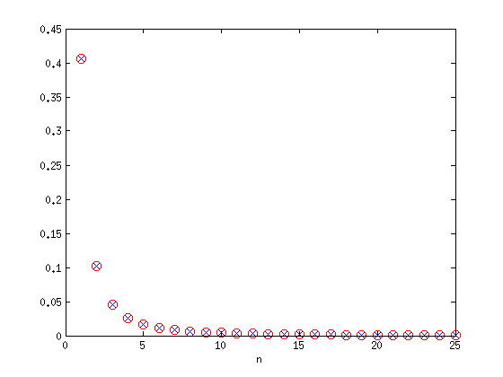
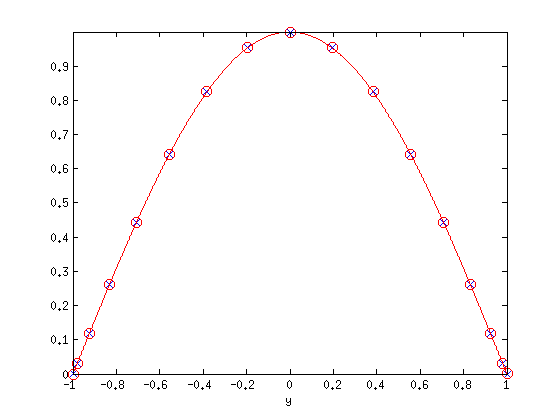
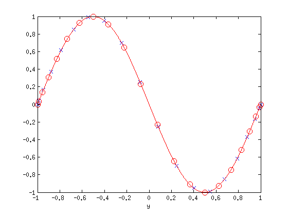

Singular Value Decomposition of Compact Operators: A Tool for Computing Frequency Responses of PDEs
Binh K. Lieu and Mihailo R. Jovanovic, 6th January 2012
Contents
(Chebfun example pde/SVDFrequencyResponse.m)
Introduction
In many physical systems there is a need to examine the effects of exogenous disturbances on the variables of interest. The analysis of dynamical systems with inputs has a long history in physics, circuit theory, controls, communications, and signal processing. Recently, input-output analysis has been effectively employed to uncover the mechanisms and associated spatio-temporal flow patterns that trigger the early stages of transition to turbulence in wall-bounded shear flows of Newtonian and viscoelastic fluids.
Frequency response analysis represents an effective means for quantifying the system's performance in the presence of a stimulus, and it characterizes the steady-state response of a stable system to persistent harmonic forcing. For infinite dimensional systems, the principal singular value of the frequency response operator quantifies the largest amplification from the input forcing to the desired output at each frequency. Furthermore, the associated left and right principal singular functions identify the spatial distributions of the output (that exhibits this largest amplification) and the input (that has the strongest influence on the system's dynamics), respectively.
We have employed Chebfun as a tool for computing frequency responses of linear time-invariant PDEs in which an independent spatial variable belongs to a compact interval. Our method recasts the frequency response operator as a two-point boundary value problem (TPBVP) and determines the singular value decomposition of the resulting representation in Chebfun. This approach has two advantages over currently available schemes: first, it avoids numerical instabilities encountered in systems with differential operators of high order and, second, it alleviates difficulty in implementing boundary conditions. We refer the user to Lieu & Jovanovic 2011 [3] for a detailed explanation of the method.
We have developed the following easy-to-use Matlab function (m-file) [1]
svdfr.m
which takes the system's coefficients and boundary condition matrices as inputs and returns the desired number of left (or right) singular pairs as the output. The coefficients and boundary conditions of the adjoint systems are automatically implemented within the code. Thus, the burden of finding the adjoint operators and corresponding boundary conditions is removed from the user. The algorithm is based on transforming the TPBVP in differential form into an equivalent integral representation. The procedure for achieving this is described in Lieu & Jovanovic 2011 [3]; also see T. Driscoll 2010 [2]. Additional examples are provided at [1].
urlwrite('http://www.ece.umn.edu/users/mihailo/software/chebfun-svd/matlab-files/svdfr.m','svdfr.m'); help svdfr
========================================================================
[Sfun,Sval] = svdfr(A0,B0,C0,Wa0,Wb0,LRfuns,Nsigs)
Given a two point boundary value representation of the frequency response
operator
{ A0*phi = B0*d,
T: { u = C0*phi,
{ 0 = Wa0*phi(a) + Wb0*phi(b),
solve the eigenvalue problem
T*Ts*Sfun = Sval*Sfun, or Ts*T*Sfun = Sval*Sfun,
where Ts is the adjoint of the frequency response operator T
{ A0s*psi = B0s*f,
Ts: { g = C0s*psi,
{ 0 = Wa0s*psi(a) + Wb0s*psi(b).
Inputs:
LRfuns = 1 --> solve for left singular functions: T*Ts
--> determine spatial profile of the output
LRfuns = 0 --> solve for right singular functions: Ts*T
--> determine spatial profile of the input
Nsigs --> number of desired singular values (default: Nsigs = 1)
Outputs:
Sval --> singular values of T arranged in descending order
Sfun --> singular functions associated with Sval
written by: Binh Lieu, 2011
reference:
B.K. Lieu & M.R. Jovanovic, "Computation of frequency responses
for linear time-invariant PDEs on a compact interval", Journal of
Computational Physics, submitted (2011); also arXiv:1112.0579v1
========================================================================
Example: one-dimensional diffusion equation
We demonstrate our method on a simple one-dimensional diffusion equation subject to spatially and temporally distributed forcing d(y,t), homogenous Dirichlet boundary conditions, and zero initial conditions
u_t(y,t) = u_{yy}(y,t) + d(y,t), y \in [-1,1]
u(-1,t) = u(+1,t) = 0, u(y,0) = 0.
Application of the temporal Fourier transform yields the following two point boundary value representation of the frequency response operator T,
( D^{(2)} - i*w )*u(y) = -d(y)
( [1; 0] E_{-1} + [0; 1] E_{1} )*u(y) = [0; 0]
where
w -- temporal frequency
D^{(2)} -- second-order differential operator in y
i -- imaginary unit
E_{j} -- point evaluation functional at the boundary y = j.
We note that svdfr.m only requires the system's coefficients and boundary conditions matrices to compute the singular value decomposition of the frequency response operator T. For completeness, we will next show how to obtain the two point boundary value representations of the adjoint operator Ts and the composition operator T*Ts.
The two-point boundary value representation for the adjoint of the frequency response operator, Ts, is given by
( D^{(2)} + i*w )*v(y) = f(y)
g(y) = -v(y)
( [1; 0] E_{-1} + [0; 1] E_{1} )*v(y) = [0; 0].
The representation of the operator T*Ts is obtained by combining the two point boundary value representations of T and Ts. This can be achieved by setting d = g
( D^{(2)} - i*w )*u(y) - v(y) = 0
( D^{(2)} + i*w )*v(y) = f(y)
( [1; 0] E_{-1} + [0; 1] E_{1} )*u(y) = [0; 0]
( [1; 0] E_{-1} + [0; 1] E_{1} )*v(y) = [0; 0].
Note that svdfr.m utilizes the integral form of a two point boundary value representation of the operator T*Ts. This yields accurate results even for systems with high order differential operators and poorly-scaled coefficients.
% The system parameters: w = 0; % set temporal frequency to the value of interest dom = domain(-1,1); % domain of your function fone = chebfun(1,dom); % one function fzero = chebfun(0,dom); % zero function y = chebfun('x',dom); % linear function
The system operators can be constructed as follows:
A0{1} = [-1i*w*fone, fzero, fone];
B0{1} = -fone;
C0{1} = fone;
The boundary condition matrices are given by:
Wa0{1} = [1, 0]; % 1*u(-1) + 0*D^{(1)}*u(-1) = 0
Wb0{1} = [1, 0]; % 1*u(+1) + 0*D^{(1)}*u(+1) = 0
The singular values and the associated singular functions of the frequency response operator can be computed using the following code
Nsigs = 25; % find the largest 25 singular values LRfuns = 1; % and associated left singular functions [Sfun, Sval] = svdfr(A0,B0,C0,Wa0,Wb0,LRfuns,Nsigs);
Analytical expressions for the singular values and corresponding singular functions are given by:
Sa = (4./(([1:Nsigs].*pi).^2)).'; % analytical singular values Sf1 = sin((1/sqrt(Sa(1))).*(y+1)); % analytical soln of 1st singular function Sf2 = sin((1/sqrt(Sa(2))).*(y+1)); % analytical soln of 2nd singular function
The absolute error of the first 25 singular values
norm(Sval - Sa)
ans = 6.7540e-15
The 25 largest singular values of the frequency response operator: svdfr versus analytical results.
plot(1:Nsigs,Sval,'bx','LineWidth',1.25,'MarkerSize',10) hold on plot(1:Nsigs,Sa,'ro','LineWidth',1.25,'MarkerSize',10); xlab = xlabel('n', 'interpreter', 'tex'); set(xlab, 'FontName', 'cmmi10', 'FontSize', 20); h = get(gcf,'CurrentAxes'); set(h, 'FontName', 'cmr10', 'FontSize', 20, 'xscale', 'lin', 'yscale', 'lin');
The principal singular function of the frequency response operator: svdfr versus analytical results.
hold off; plot(y,-Sfun(:,1),'bx-','LineWidth',1.25,'MarkerSize',10) hold on; plot(y,Sf1,'ro-','LineWidth',1.25,'MarkerSize',10); xlab = xlabel('y', 'interpreter', 'tex'); set(xlab, 'FontName', 'cmmi10', 'FontSize', 20); h = get(gcf,'CurrentAxes'); set(h, 'FontName', 'cmr10', 'FontSize', 20, 'xscale', 'lin', 'yscale', 'lin'); axis tight
The singular function of the frequency response operator corresponding to the second largest singular value: svdfr versus analytical results.
hold off; plot(y,Sfun(:,2),'bx-','LineWidth',1.25,'MarkerSize',10) hold on; plot(y,Sf2,'ro-','LineWidth',1.25,'MarkerSize',10); xlab = xlabel('y', 'interpreter', 'tex'); set(xlab, 'FontName', 'cmmi10', 'FontSize', 20); h = get(gcf,'CurrentAxes'); set(h, 'FontName', 'cmr10', 'FontSize', 20, 'xscale', 'lin', 'yscale', 'lin'); axis tight
References
[1] http://www.ece.umn.edu/users/mihailo/software/chebfun-svd/
[2] T. A. Driscoll, Automatic spectral collocation for integral, integro-differential, and integrally reformulated differential equations, J. Comput. Phys. 229 (2010), 5980-5998.
If you are using this software please cite:
[3] B. K. Lieu and M. R. Jovanovic, "Computation of frequency responses for linear time-invariant PDEs on a compact interval", Journal of Computational Physics (2011), submitted; available at: arXiv:1112.0579v1
[4] L. N. Trefethen and others, Chebfun Version 4.0, The Chebfun Development Team, 2011, http://www.maths.ox.ac.uk/chebfun/